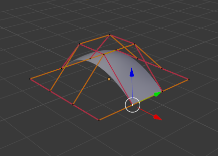

Редагування -- Editing¶
Правлення поверхні має навіть менше засобів та опцій, яке є для редагування кривих, але має багато спільних моментів з останнім... Тому, ця сторінка охоплює (або намагається охопити) усі аспекти від основ редагування поверхонь до більш просунутих тем, як ретопологія.
Пересування -- Translation, Обертання -- Rotation, Масштабування -- Scale¶
Орієнтир -- Reference
| Mode: | Edit Mode |
|---|---|
| Panel: | |
| Menu: | |
| Hotkey: | G, R, S |
Після виділення однієї або більше керувальних точок ви можете захопити/пересувати G, обертати R або масштабувати S їх, як і багато інших речей у Blender'і, як описано у підрозділі Manipulation in 3D Space.
Ви також маєте у режимі правки -- Edit Mode додаткову опцію при використанні цих базових маніпуляцій: пропорційну правку -- proportional editing.
Панель «Трансформації» -- Transform Panel¶
Дивіться тут -- Панель «Трансформації» -- Transform Panel.
Просунуті засоби трансформування¶
Орієнтир -- Reference
| Mode: | Edit Mode |
|---|---|
| Panel: | |
| Menu: |
Трансформаційні інструменти « До Сфери» -- To Sphere, «Косування» -- Shear, «Жолоблення» -- Warp та «Уштовх/Виштовх» -- Push/Pull описані у підрозділі Mesh Transformation. Поверхні не мають жодних специфічних лише для них засобів трансформування.
Устави керувальних точок НОРБС¶
Ми бачили на цій сторінці -- previous page, що керувальні точки НОРБС -- NURBS мають вагомість -- weight, яка є впливом такої точки на поверхню. Ви можете задавати її за допомогою великої кнопки «Задання Вагомості» -- Set Weight на панелі «Інструменти Кривих» -- Curve Tools (після визначивши цю вагомість у числовій кнопці справа) або безпосередньо увівши значення у кнопку з числом W на панелі Transform.
Додання або видавлення¶
Орієнтир -- Reference
| Mode: | Edit Mode |
|---|---|
| Panel: | |
| Menu: | |
| Hotkey: | E, Ctrl-LMB |
Unlike meshes or curves, you cannot generally directly add new control points to a surface (with Ctrl-LMB clicks), as you can only extend a surface by adding a whole U or V row at once. The only exception is when working on a NURBS surface curve, i.e. a surface with only one control point on each U or V row. In this special case, all works exactly as with curves.
У більшості ситуацій доступне тільки видавлення. Як звичайно після активації цього інструмента негайно відбувається видавлення і ви поміщаєтеся у режим захопу-пересування Grab mode, що дає вам готовність перетягувати нову видавлену поверхню в її місце призначення.
Для розуміння дуже важливими є дві речі:
- Поверхні -- це 2D об'єкти. Тому, ви не можете видавлювати будь-що всередину поверхні (наприклад, «внутрішній» ряд»); це не матиме сенсу!
- Керувальна «ґратка» повинна залишатися «квадратовою», а це означає, що ви можете видавлювати тільки ряд цілком, а не частини рядів тут і там...
Підсумовуючи, інструмент Extrude буде працювати тільки, коли попередньо один і тільки один межовий ряд цілком виділено, інакше нічого не трапиться.
Подібно як з кривими, ви не можете створити нову поверхню у вашому об'єкті з нізвідки, просто клацнувши Ctrl-LMB, не маючи нічого виділеним. Однак, на відміну від кривих, немає жодної опції «розрізання», що дозволяє вам розокремлювати поверхню на кілька частин, а тому, ви можете створювати нову поверхню тільки копіюванням (Duplication) наявної вже Shift-D або доданням нової поверхні за допомогою меню Add.
Приклади¶
Ілюстрації з Selecting control point. до Видавлення. показують типове видавлення уздовж сторони поверхні.
На Ілюстраціях Selecting control point. та Shift-R межовий ряд керувальних точок було підсвічено виділенням одиничної керувальної точки, а потім використано зручний засіб виділу ряду Shift-R для виділення решти керувальних точок.

Selecting control point. |

Shift-R |
Цей край далі видавлено за допомогою E, як показано на Ілюстрації Видавлення.. Зауважте, як сіть збивається до купи біля підсвіченого краю. Це тому, що новий видавлений підрозділ поверхні збивається до купи також.

Видавлення.
При пересуванні цього нового підрозділу від даної області поверхня починає «розкуповуватися».
Ви можете продовжувати цей процес видавлення або додавати нові підрозділи поверхні, допоки ви не досягнете фінально потрібної вам форми моделі.
Відкривання або закривання поверхні¶
Орієнтир -- Reference
| Mode: | Edit Mode |
|---|---|
| Panel: | |
| Menu: | |
| Hotkey: | Alt-C |
Як і криві -- curves, поверхні можуть бути закритими (зацикленими) або відкритими. Однак, оскільки поверхні є 2D, ви можете керувати цією властивістю незалежно уздовж осей U та V.
Для перемикання властивості зациклення поверхні уздовж однієї з осі скористайтеся Alt-C та вибирайте «Зациклити по U» -- cyclic U або «Зациклити по V» -- cyclic V зі спливного меню. Відповідні зовнішні краї поверхні сполучаться разом для формування «закритої» поверхні.
Ghi chú
Внутрішня та зовнішня сторони поверхні
Поверхні мають «внутрішню» та «зовнішню» сторони, перша буде чорною, а остання коректно відтіненою. (Здається не існує жодної опції «двостороннього» відтінення для поверхонь...). Коли ви закриєте поверхню в одному або двох напрямках, ви можете отримати повністю чорний об'єкт! У цьому випадку просто перемкніть напрямок -- Switch Direction вашої поверхні...
Дублювання -- Duplication¶
Орієнтир -- Reference
| Mode: | Edit Mode |
|---|---|
| Panel: | |
| Menu: | |
| Hotkey: | Shift-D |
Подібно як із сітями та кривими, це засіб дублює виділення. Копія виділяється та поміщається у режим захопу Grab, а тому ви можете перемістити її в інше місце.
Однак, для поверхонь є деякі виділення, що не можуть бути дубльовані, і в цьому випадку вони будуть просто поміщені у режим Grab... Фактично, тільки виділення, що формує одиничну дійсну під-ґратку, може копіюватися; давайте розгляньмо це на практиці:
- You can copy a single control point. From it, you will be able to "extrude" a "surface curve" along the U axis, and then extrude this unique U row along the V axis to create a real new surface.
- You can copy a single continuous part of a row (or a whole row, of course). This will give you a new U row, even if you selected (part of) a V row!
- Ви можете копіювати одиничну під-ґратку цілком.
Ghi chú
Намагання дублювати кілька дійсних «під-ґраток» (навіть ти, що є одиничними точками) за раз не працюватиме; ви повинні робити це по одній за раз...
Видалення елементів¶
Орієнтир -- Reference
| Mode: | Edit Mode |
|---|---|
| Panel: | |
| Menu: | |
| Hotkey: | X, Delete |
Спливне меню Стирання для поверхонь пропонує вам дві опції:
- Виділене -- Selected
Це видалить виділений ряд без розірвання поверхні (тобто, суміжні ряди будуть безпосередньо пов'язані, сполучені, після видалення проміжних між ними). Таке виділення повинно відповідати таким правилам:
- Цілі ряди і тільки ряди цілком повинні виділятися.
- Only rows along the same axis must be selected (i.e. you cannot delete both U and V rows at the same time).
Також пам'ятайте, що порядок НОРБС не може бути вищим, ніж кількість керувальних точок по заданій осі, а тому він може зменшитися, коли ви видаляєте окремі керувальні точки... Звичайно, коли тільки один ряд залишається, поверхня стає «кривою поверхні»; коли тільки одна точка залишається, то немає більше жодної видимої поверхні; і коли усі точки видаляються, то і сама поверхня видалиться.
- All -- Усе
- Як для сітей або кривих, це видаляє все в об'єкті!
Приклад¶

До і після.
Зліва на Ілюстрації До і після ряд керувальних точок було виділено шляхом спочатку виділення однієї керувальної точки та використання Shift-R для виділення решти керувальних точок. Далі, за допомогою меню Delete X виділений ряд керувальних точок стерто, результат чого на правій частині ілюстрації До і після.
Сполучення або об'єднання поверхонь¶
Орієнтир -- Reference
| Mode: | Edit Mode |
|---|---|
| Menu: | |
| Hotkey: | F |
Так само як для кривих -- curves, об'єднання двох поверхонь вимагає, щоб було виділено одиничний край, межовий ряд керувальних точок на двох окремих поверхнях. Це означає, що поверхні повинні бути частиною одного і того ж об'єкта. Наприклад, ви не можете сполучити дві поверхні у режимі об'єкта -- Object Mode -- але ви можете, звичайно, як і з об'єктами однакового типу, сполучити два або більше об'єктів типу Surface в один об'єкт за допомогою Ctrl-J -- вони просто не будуть «пов'язані» або об'єднані в одну поверхню... Так, це трохи заплутано!
This tool is equivalent to creating edges or faces for meshes
(hence its shortcut), and so it only works in Edit Mode.
The selection must contain only border rows of the same resolution
(with the same number of control points),
else Blender will try to do its best to guess what to merge with what, or the merge will fail
(either silently, or stating that Resolution does not match if rows with
different number of points are selected, or that there is Too few selections to merge
if you only selected points in one surface...).
To select control points of different surfaces,
in the same object, you must use either border select or circle select.
Holding down Ctrl while LMB will not work.
So to avoid problems, you should always only select border rows with the same number of points... Note that you can join a border U row of one surface with a border V row of another one, Blender will automatically "invert" the axis of one surface for them to match correctly.
Криві поверхні НОРБС часто використовуються для створення таких об'єктів, як корпуси, оскільки вони визначають поперечні перерізи по всьому об'єкту, і вони просто мають «покривати» їх, як описано вище, щоб отримати гарну, плавну та гармонічну форму.
Приклади¶
Ілюстрація Готовність до сполучення. є прикладом кривих двох НОРБС поверхонь, не кривих NURBS, у режимі правки -- Edit Mode, готових до сполучення. Ілюстрація Завершене сполучення. є результатом сполучення цих двох кривих.

Готовність до сполучення. |

Завершене сполучення. |
Підподілення -- Subdivision¶
Орієнтир -- Reference
| Mode: | Edit Mode |
|---|---|
| Panel: | |
| Menu: | , |
Підподілення поверхні є досить простим: використавши запис Subdivide у меню Specials W або кнопку Subdivide на панелі Curve Tools, ви підподілите за раз усі повністю виділені ґратки, підподіливши кожен «квадратик» на чотири менші.
Якщо ви застосовуєте його до 1D поверхні («крива поверхні», то це засіб працює точно так, як для підподілення кривих -- curves.
Обкрут -- Spin¶
Орієнтир -- Reference
| Mode: | Edit Mode |
|---|---|
| Panel: | |
| Menu: |
Цей засіб трохи подібний до його аналога для сітей -- mesh counterpart, але з меншими можливостями керування (фактично, їх немає!).
It only works on selected "surfaces" made of one U row (and not with one V row), so-called "surface curves", by "extruding" this "cross section" in a square pattern, automatically adjusting the weights of control points to get a perfect circular extrusion (this also implies closing the surface along the V axis), following exactly the same principle as for the NURBS Tube or NURBS Donut primitives.
Перемкнути Напрям -- Switch Direction¶
Орієнтир -- Reference
| Mode: | Edit Mode |
|---|---|
| Panel: | |
| Menu: | , |
Цей засіб буде «розвертати» напрям будь-якої кривої з принаймні одним виділеним елементом (тобто, стартова точка буде ставати кінцевою точкою і навпаки). Головним чином корисно при використанні кривої як шляху або для опцій скошування та звужування...
Інші опції меню «Спеціальн延
Орієнтир -- Reference
| Mode: | Edit Mode |
|---|---|
| Menu: | Specials |
| Hotkey: | W |
Меню Specials для поверхонь містить точно такі ж додаткові опції, як для кривих, за винятком Set Radius та Smooth Radius.
Конвертування¶
Оскільки є тільки поверхні НОРБС, то немає жодного «внутрішньо» конвертування.
Проте, доступне «зовнішнє» конвертування, з поверхні у сіть, що працює тільки у режимі об'єкта -- Object Mode. Воно трансформує об'єкт типу Surface в об'єкт типу Mesh, використовуючи роздільності поверхні в обох напрямках для створення граней, ребер та вершин.
Різне редагування¶
Ви маєте деякі такі ж опції, як для сітей або як у режимі об'єкта -- Object Mode. Ви можете відокремлювати -- separate дану поверхню з P, робити інші виділені об'єкти нащадками -- children однієї або трьох керувальних точок з Ctrl-P, або додавати гачки -- add hooks для керування деякими точками за допомогою інших об'єктів.
Також доступний засіб дзеркалення Mirror, що поводиться точно так же, як і для сітьових об'єктів -- mesh objects.